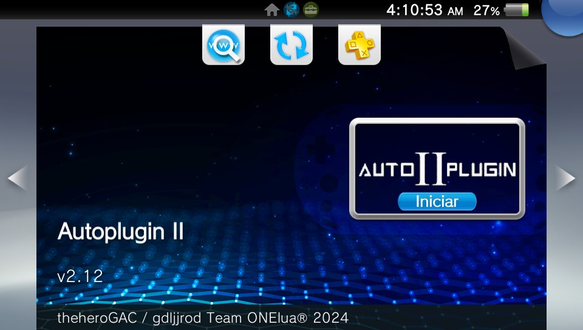
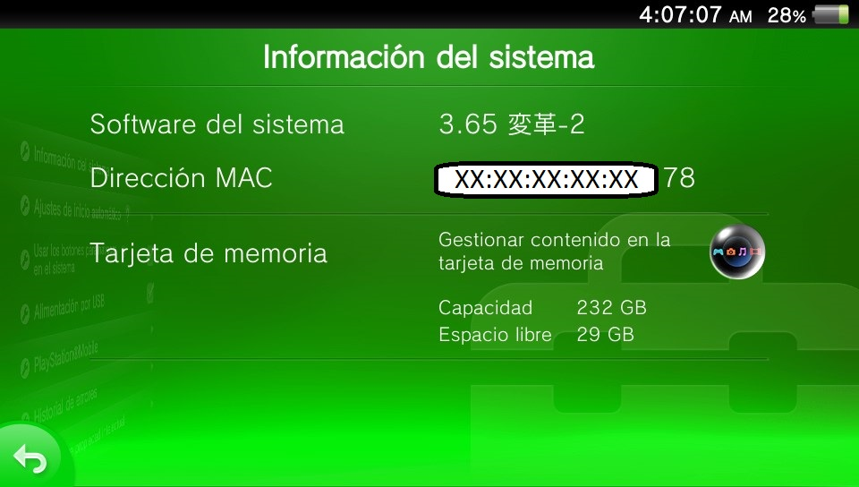
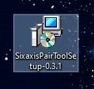
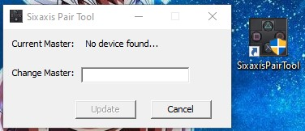
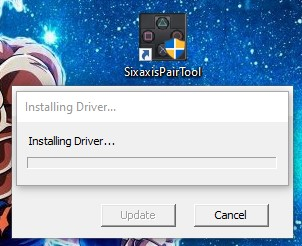
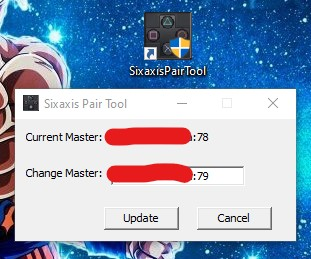

Mandos en Nuestra PSVita
Podemos colocarle mandos de PS3 y PS4a nuestra consola para poder jugar con ellos de forma separada o juntas

Para esta Guia
Requisitos para este tutorial
- PC o Notebook (Para pasar Archivos)
Empezando este Tutorial
- Descargamos los archivos
- Descomprimimos los archivos .rar o .zip
- SixaxisPairToolSetup-0.3.1.rar
- Con la última versión disponible
- Una vez descargado nuestro archivo
- Para comenzar
- Debemos tener instalado AutoPlugin 2 y activar algunos plugin 
- ds3vita by xerpi para controlar desde el mando de PS3
- ds4Touch by MERLev añade soporte para el touchpad del PS4
- ds4vita by xerpi para controlar desde el mando de PS4
- Una ves terminado de instalar los plugin
- En nuestra consola
- Necesitamos saber nuestra dirección MAC de nuestra consola
- Vamos a Ajustes/Sistema/Información del Sistema veremos nuestra dirección MAC
- Recordar el ultimo numero de nuestra MAC XX:XX:XX:XX:XX:78 para usarla en el PC 
- En nuestro computador
- Descargamos el archivo y lo extraemos 
- El archivo SixaxisPairToolSetup-0.3.1.exe lo instalamos
- Al terminar lo abrimos 
- Con este programa cambiaremos la Mac de nuestro control para que lo detecte nuestra consola PSVita
- Conectamos nuestro control por medio del cable USB y esperamos que el programa detecte el control 
- Colocamos la MAC de nuestra consola, pero el ultimo numero lo elevamos un digito más como por ej 78 a 79 y si esta con letra será FA a FB 
- Y le damos a Update y desconectamos el control
- En nuestra consola
- Para conectar el control vamos a Ajustes/Dispositivos/Dispositivos Bluetooth y esperamos que se conecte con nuestra consola
- Nos mostrará ningún mensaje solo al veremos con el control empezará a mover entre el menú
- y listo
- Como podemos conectar otro mando más a nuestra PSVita y tener 2 mandos conectado
- Solo para juegos compatibles para 2 controles
- Para esto vamos a instalar otro plugin mas
- MiniVitaTV by TheOfficialFloW beta 0.5
- Con este plugin nos aparecerá el mando en la lista de los Bluetooth
- Hay que probarlos con 2 mandos igual
- Para mandos de PS3 hay que cambiarlo con el método anterior
- 1.0 ----- mandos de Ps4 solo presionando SHARE +

- Una vez terminado de conectar los mandos desinstalamos el plugin de MiniVitaTV by TheOfficialFloW beta 0.5
- Para no tener problemas con la consola
- Para Adrenaline
- Recomendación apagar el Bluetooth abrir Adrenaline y el juego activar e ir conectando los controles que necesitemos
- Para activar el uso del control presionamos y vamos a Settings y en Use DS#/DS4 Controller le damos yes
- Y es necesario reiniciar la consola después de este cambio
- Y listo
×